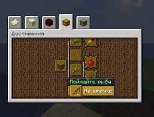

|

В гравця є
В цьому проходять майнкрафт Тяжкі очівкиПолучение Достижения сохраняются в папке с миром. Их можно получить в любом режиме игры, выполнив нужную задачу или используя команду /advancement. Достижение можно выполнить даже без завершения прошлых достижений, находящихся перед данным. Когда достижение выполнится, в правом верхнем углу и в чате появится сообщение об этом. Цвет текста заголовка в уведомлении зависит от достижения: у целей и обычных достижений желтый текст заголовка, у испытаний — розовый. Заголовок при выполнении обычного достижения — «Новое достижение!», цели — «Цель достигнута!», испытания — «Испытание завершено!». Если вы выполните любое испытание, то вам воспроизведётся соответствующий звук. ИнтерфейсЧтобы открыть систему достижений, необходимо нажать соответствующую кнопку в меню паузы или клавишу L (может быть изменена в настройках игры). Изначально в окне системы достижений будет написано: «Похоже, что здесь ничего нет :(». Вкладки открываются после получения первых достижений. Система достижений состоит из «деревьев», каждое из которых оканчивается целями или испытаниями. Таких «деревьев» всего пять: Minecraft: Главная история игры. Приключения: Приключения, исследования и сражения. Нижний мир: Захватите летнюю одежду. Край: Конец… или начало? cельское хозяйство: Мир друзей, добра и еды. Каждая вкладка имеет свой фон с повторяющейся текстурой. При удерживании курсора на значке достижения, можно увидеть название достижения и его описание. Рамки значков достижений различаются в зависимости от сложности достижения |